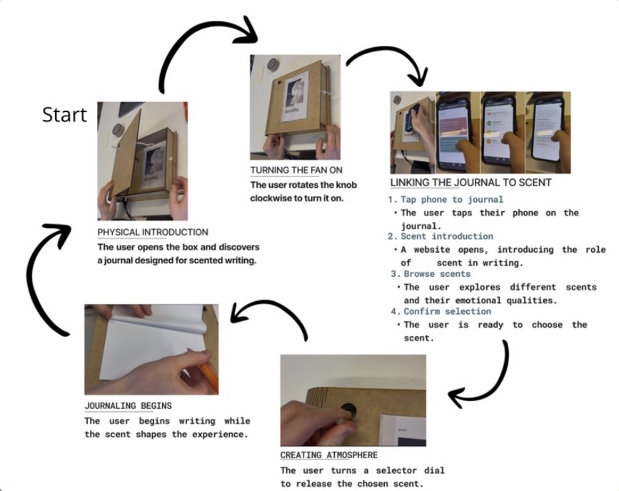
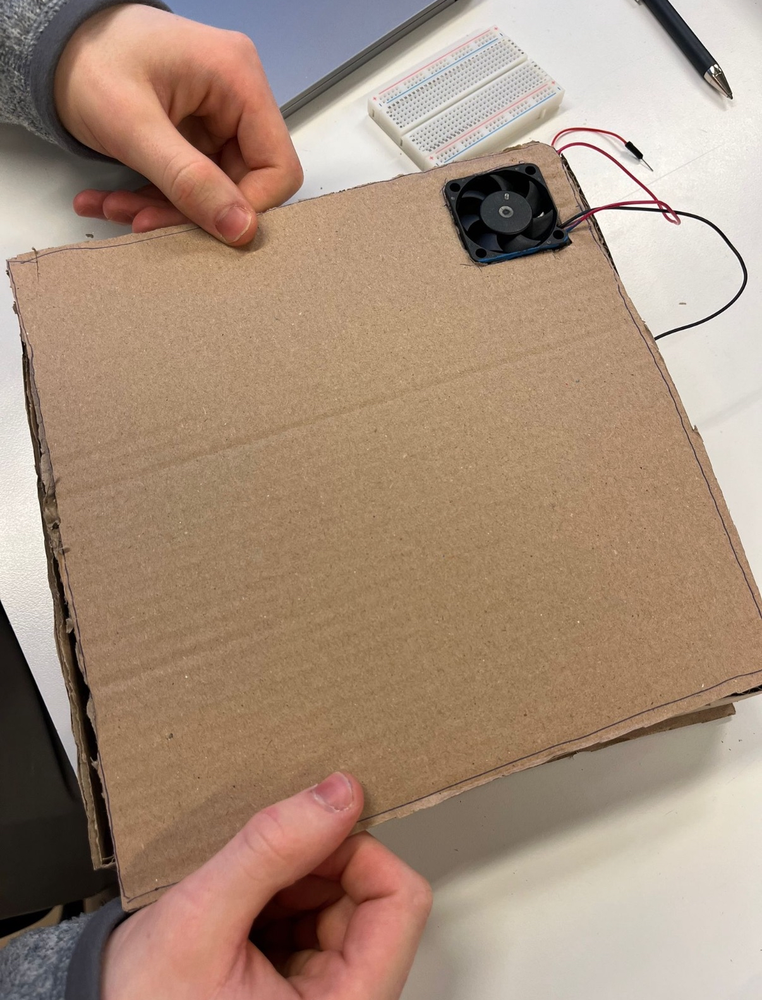
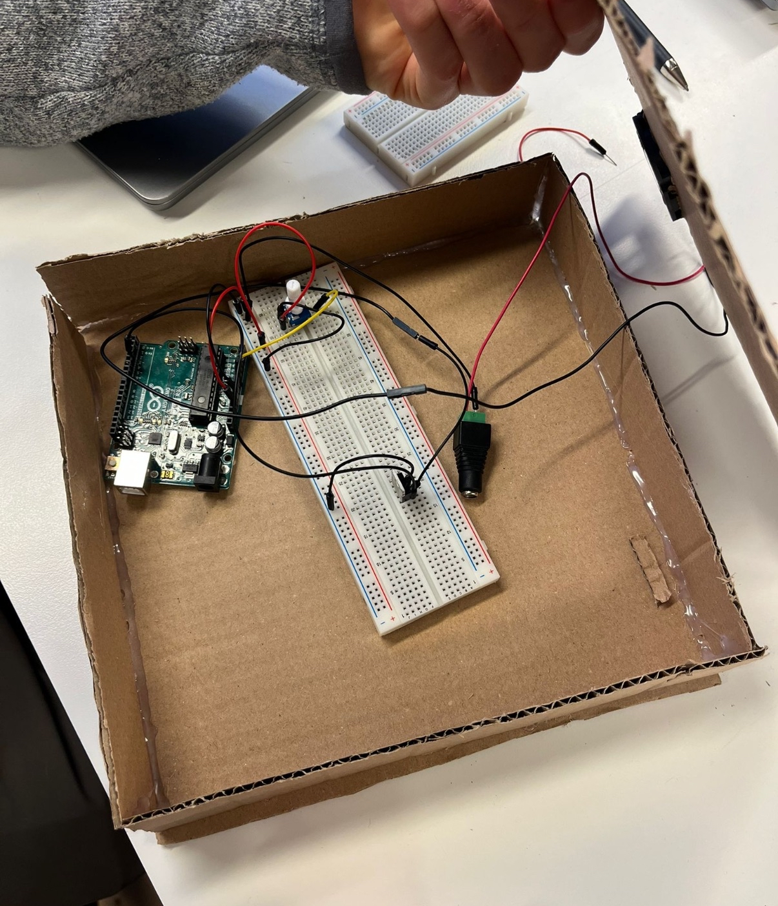
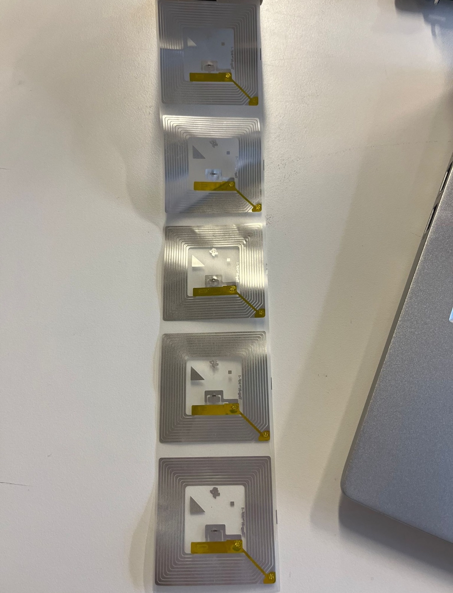
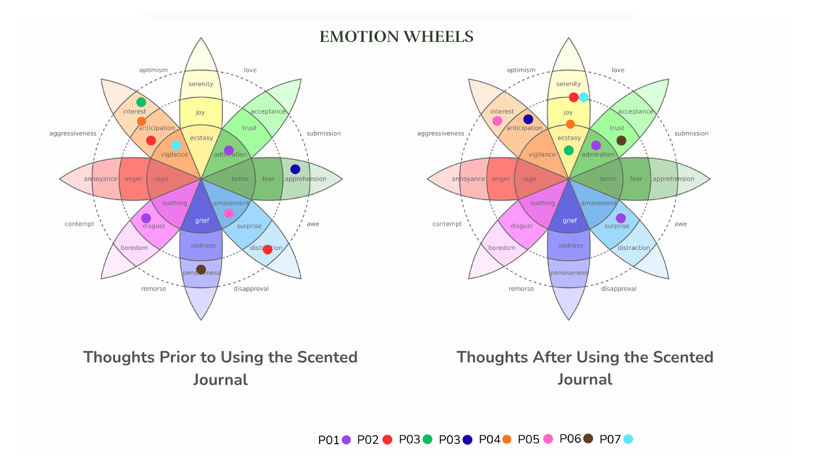

Why scent?
Scent can trigger memory and emotion almost instantly, which made it interesting as a prompt for reflective writing.
Designing an olfactory journaling experience for deeper reflection
This project started with a simple curiosity: could scent help people enter reflection more gently than written prompts do? Instead of asking users direct questions, the idea was to let smell do some of the emotional work and open up memory in a less forced way.


This video shows how the prototype works in practice, from scent activation to the shift into journaling.
Many journaling tools rely on written prompts or visual interfaces. Those can work, but they can also feel a bit demanding. Our group wanted to explore a softer entry point. Because scent is so tied to emotion and autobiographical memory, it felt like a promising way to support reflection more indirectly and personally.
Scent can trigger memory and emotion almost instantly, which made it interesting as a prompt for reflective writing.
The experience needed to stay calm and open-ended, because reflection is easy to interrupt if the design starts feeling too task-like.
The digital layer had to support the ritual without taking over the physical moment of sitting down, smelling, and writing.

This was a group project, but I had a very hands-on role in both the physical and technical parts. Together with another group member, I built the early cardboard prototype to test whether the enclosure could realistically fit the Arduino, fan, wires, and breadboard before we moved further.
I also programmed the Arduino system, handled the wiring, and helped shape how the scent would actually be diffused. Later on, I built the website version of the digital component and set up the NFC interaction so users could scan the journal and move directly into the web experience.
One of the earliest discussions was about form. Some of the first ideas looked more like standalone devices, but I pushed for a book-like shape instead. That felt much closer to the journaling context and helped the prototype feel more intimate and less like a gadget.
I also influenced the interaction on a technical level. Since people perceive scent differently, I suggested using a potentiometer so users could control fan speed and, by extension, scent intensity. That made the experience more adjustable and less rigid.
Another important decision was how to make the scent noticeable without making the system feel fussy. I wanted the diffusion to support the ritual, not interrupt it.
From the beginning, we treated scent as part of the interaction, not just decoration. Early prototypes focused on simple delivery methods and low-fidelity enclosure ideas. Before committing to the final build, we made a cardboard prototype to test the internal layout and make sure the concept could actually work physically.
That step helped a lot. It let us understand the spatial constraints early and test whether the book metaphor worked in real life, not just as a nice concept sketch.


Later iterations moved toward a laser-cut final prototype that more clearly resembled a book. This made the object feel more aligned with journaling and helped strengthen the narrative of the experience.

I programmed the Arduino system and wired the electronics behind the diffusion mechanism. The fan became a key part of the interaction because it controlled how the scent entered the experience. Adding the potentiometer meant users could also influence intensity in a simple, physical way.
I also helped bridge the physical and digital parts of the project. While another group member designed the journal and web app concept, I made the digital part function as a real website and connected it to the artifact through NFC tags. That made the transition between object and interface feel much more natural.

We evaluated the prototype through a small exploratory study with six participants. Some journaled with scent cues and others without, which gave us a simple way to compare both conditions.
The testing also made something very clear: scent is hard to control consistently. Intensity, timing, and personal sensitivity all shaped the experience, which made adjustability much more important than it first seemed.

Because of its mix of olfactory interaction, journaling, and physical computing, the project was selected to be shown during open house events. That felt like a good sign that the concept stood out not just as research, but as an interaction design experience people remembered.
One of the clearest lessons from this project was how fragile reflective moments can be. Even small interruptions pulled attention away from the writing, which made automation much more valuable than I first expected.
For me, this project was also a strong reminder that good interaction design is not only about screens. Form, atmosphere, timing, and technical constraints all shape the experience too. It gave me a lot more confidence in working across physical prototyping and digital implementation together.
If I kept developing it, I would focus on more consistent scent delivery, a more refined physical finish, and broader testing to understand how different people respond to scent cues during reflection.
Open Full Research PaperI'm interested in roles and collaborations where interface design, prototyping, and research genuinely shape each other.